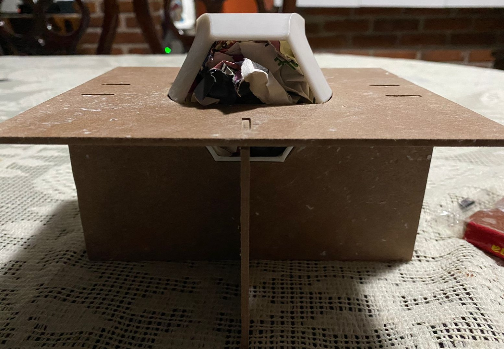
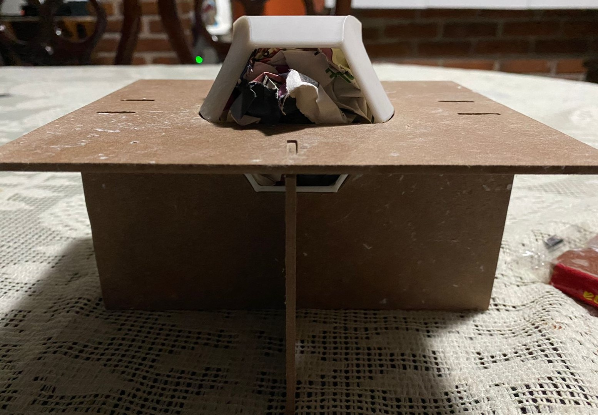
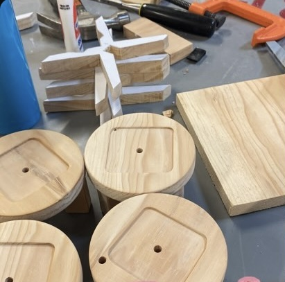
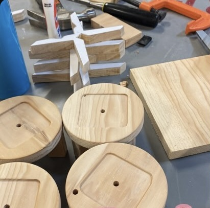

Mi Portafolio
Sofía Pérez
Estudiante en la licenciatura de diseño en la UAM-C
↓
Estudiante en la licenciatura de diseño en la UAM-C
↓Soy estudiante de la Licenciatura en Diseño en la Universidad Autónoma Metropolitana, Unidad Cuajimalpa. Mi formación me ha permitido desarrollar habilidades en diseño gráfico, diseño industrial, diseño interactivo; combinando creatividad, funcionalidad y una visión estratégica del diseño.
Me interesa la innovación, la resolución de problemas y la creación de experiencias visuales que generen impacto. A lo largo de mi trayectoria académica, he trabajado en diversos proyectos que abarcan desde el diseño de productos, branding, cerámica, termoformados, grabados, el uso de electricidad y prototipos en maquinaria CNC.


Licenciatura en diseño, Universidad Autónoma Metropolitana, Unidad Cuajimalpa (En curso, 8º trimestre)
Áreas de enfoque: Diseño Industrial; desarrollo y conceptualización de objetos funcionales, incluyendo selección de materiales y prototipado.


Taller de lenguajes para el diseño
Impartió: Lorena Alejandra Guerrero Morán
Esta actividad consistió en estudiar e interpretar las formas de un tucán a través de bocetos, explorando líneas, proporciones y estructuras básicas que conforman su figura. Posteriormente se desarrolló una maqueta tridimensional en papel para representar al ave.


En este primer laboratorio, se realizó un rompecabezas para niños destinado a un zoológico, el cual presenta las especies endémicas de México. Para su desarrollo, se aplicaron los fundamentos teóricos de la morfología en el diseño de los elementos.


Este laboratorio tiene como objetivo aplicar de manera significativa los conocimientos adquiridos sobre los fundamentos del diseño y las habilidades de representación, adquiridos en cursos previos, para generar y evaluar alternativas de solución a problemas integrales de diseño. En este contexto, como proyecto final, se desarrolló un juego de mesa destinado a niños de 6 a 8 años, cuyo propósito es estimular la creatividad, la imaginación y la expresión oral. Los niños crean historias a partir de tarjetas que contienen elementos seleccionados aleatoriamente mediante un dado, promoviendo así un aprendizaje lúdico y dinámico.
Integrantes: Abigail Luna, Tania Quiroz, Sofía Pérez e Isaac Zaldívar


El proyecto final consistió en el diseño y creación de una autómata, aplicando los conocimientos adquiridos en expresión gráfica y dibujo técnico. Se trabajó en la representación precisa de los componentes y su funcionamiento, integrando creatividad y principios mecánicos para desarrollar un artefacto funcional y visualmente atractivo.


En este taller aplicamos conocimientos básicos de geometría en dos dimensiones para la creación de la forma. En este trimestre, comenzamos con la formación en AutoCAD, y el ejercicio consistió en el diseño de embalaje. En mi caso, realicé el empaque para unos macarons, buscando un diseño minimalista e innovador. Para lograrlo, incorporé una "cúpula" de acetato que permitiera visualizar el producto, creando una presentación atractiva y funcional. Siguiendo las normas de salud establecidas en México.
Materiales: Cartulina opalina y acetato.


 

En este taller trabajamos con cerámica, creando macetas bajo el concepto de “reproducción industrial”. Nos enfocamos en procesos fabriles para replicar cinco macetas con sus empaques y bases. Utilizamos modelado 3D, impresión y serigrafía, aplicando conocimientos previos en embalaje e identidad visual.

 



Para representar la soledad y la exclusión social presentes en el fraccionamiento, se incorporó un domo que cubre la maqueta, simbolizando el aislamiento y encierro que experimentan sus habitantes. Esta decisión refuerza la narrativa de las problemáticas de la comunidad, aportando un significado más profundo al diseño. Además, se desarrollaron pictogramas como elementos clave de nuestra investigación, permitiendo identificar los espacios más relevantes dentro del fraccionamiento. Para ello, se establecieron cuatro categorías: puntos de reunión, servicios, infraestructura y percepción.

Fraccionamiento “Las Rosas” 54069, Tlanepantla, Méx.

Para convertir la información obtenida en un elemento físico como la maqueta, se llevó a cabo un análisis detallado del espacio y las problemáticas identificadas en el fraccionamiento. Entre estas, se optó por resaltar los andadores y los puntos de reunión como los principales elementos a representar.


Para representar la soledad y la exclusión social presentes en el fraccionamiento, se incorporó un domo que cubre la maqueta, simbolizando el aislamiento y encierro que experimentan sus habitantes. Esta decisión refuerza la narrativa de las problemáticas de la comunidad, aportando un significado más profundo al diseño. Además, se desarrollaron pictogramas como elementos clave de nuestra investigación, permitiendo identificar los espacios más relevantes dentro del fraccionamiento. Para ello, se establecieron cuatro categorías: puntos de reunión, servicios, infraestructura y percepción.